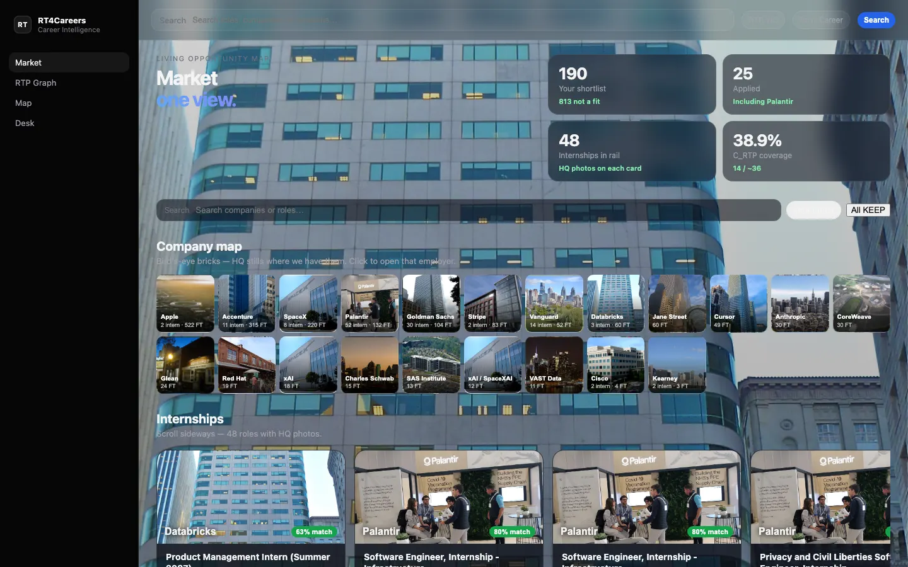

Insights
What the market actually shows
A maintained map, not a search box — and why the queue is a decision object, not a job board.

Most career tools wait for a query and return a list. The market here is already mapped. Every opening already has a place, an employer, and a next move. The job of the screen is to show which names need a conversation this week.
A queue, not a board
Keep, review, and apply sit above hold. That is intentional. The interesting work is the subset of the market where fit and timing are out of line — not every posting sorted by recency.
Coverage in the same frame
The graph pairs that queue with how much of the market is actually on the map. If a metro is thin, or a target employer is missing, it shows up as a gap — not a footnote after you have already trusted the list.
The same surfaces, every search
This note uses one market view as an example. The product opens the same Market, graph, map, and desk for the search you are in. Example imagery is not a claim of a customer, partnership, deployment, or endorsement.
Want this queue on your market? Walkthroughs are scheduled.
Request a walkthrough